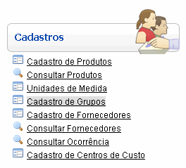
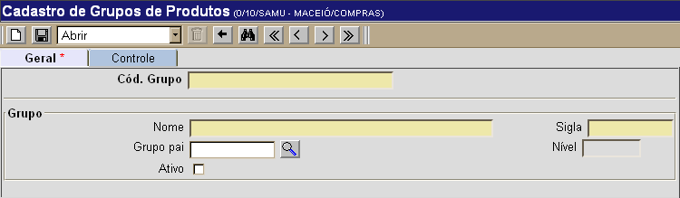
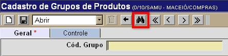
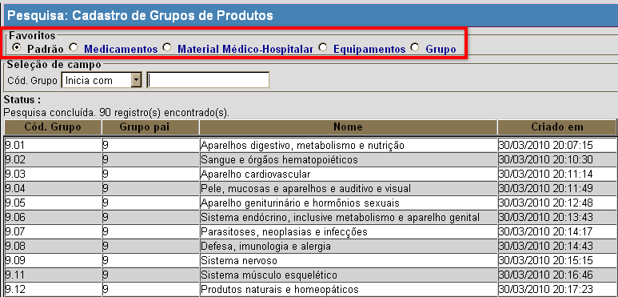
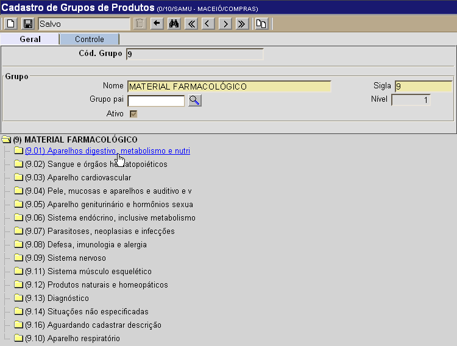

Cadastro de Grupos de Produtos [ Voltar ]Utilize este formulário para cadastrar e editar grupos de produtos. Para acessá-lo, vá ao menu "Cadastros" na tela inicial e clique em "Cadastro de Grupos".
Após clicar no nome do formulário, o sistema abrirá a seguinte tela: 
Selecione uma das duas opções abaixo para ver o guia passo-a-passo: Cadastrar novo grupo Editar grupo já cadastrado Cadastrar novo grupo1º Passo: informe os dados do grupo de produtos que deseja cadastrar. Os campos em amarelo são obrigatórios.
2° Passo: clique no botão  para
salvar o grupo de produtos. para
salvar o grupo de produtos.Editar grupo já cadastradoPara editar os detalhes de um grupo existente, siga os passos abaixo. 1º Passo: clique no botão  para localizar o grupo que deseja
abrir. para localizar o grupo que deseja
abrir. 
Em seguida, utilize os favoritos de pesquisa relevante para localizar o grupo desejado: Padrão, Medicamentos, Material Médico-Hospitalar, Equipamentos ou Grupo (ver imagem abaixo) . Para mais informações sobre outros recursos e funcionalidades da pesquisa, favor ver o manual Introdução ao Sistema. 
Assim que localizar o registro em questão, selecione-o com um clique. Quando o grupo é selecionado, o seu cadastro é aberto e são exibidas as informações atuais. 2° Passo: edite as informações do grupo. Ao abrir um grupo existente, na parte inferior da tela são exibidos os outros grupos (principal e subgrupos) a ele associados. Ao clicar em um subgrupo, o usuário será direcionado ao registro correspondente. 
Importante: para desativar um grupo, é necessário que todos os seus subgrupos estejam também desativados. Para desativar um grupo, clique na opção "Ativo" e, em seguida, salve o registro. |